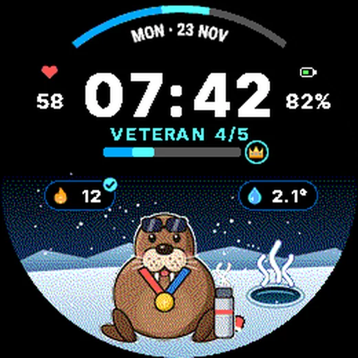
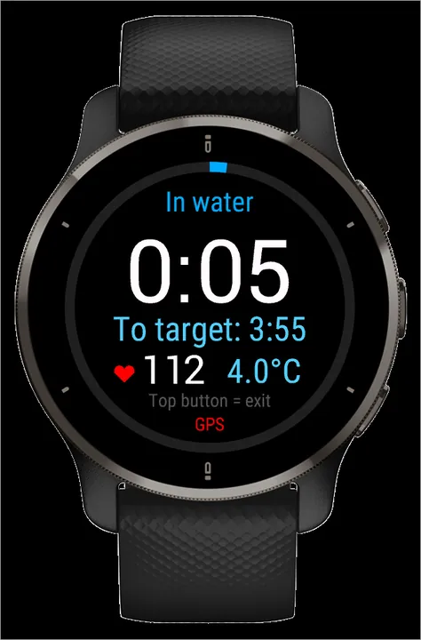

Előtte / a vízben / utána
A felső gomb váltja a fázisokat. A vízben töltött idő csak ketyeg tovább — az app soha nem mondja, hogy lépj ki. Ez a te döntésed. Az előző időd csak viszonyítási pont, nem megdöntendő cél.
Hideg merülés és jeges fürdés, rendesen rögzítve — nem úszásként.
5.0 a Connect IQ-ban · 1000+ letöltés
Vagy keresd a „Cold Dipet” a telefonod Connect IQ alkalmazásában.


Platformok
A Cold Dip ma már elérhető Garmin órákon. Az Amazfit (Zepp OS) változat vizsgálat alatt van a Zepp App Store-ban. A Huawei, Wear OS és Apple Watch változatok készülőben vannak.
Merülésre készült, nem medencés edzésre. Végig te irányítasz.
A felső gomb váltja a fázisokat. A vízben töltött idő csak ketyeg tovább — az app soha nem mondja, hogy lépj ki. Ez a te döntésed. Az előző időd csak viszonyítási pont, nem megdöntendő cél.
A pulzust végig rögzíti. A vízhőmérsékletet kézzel adod meg, és a tevékenységgel együtt mentődik.
Levegő hőmérséklete, hőérzet és szél — a telefonos Garmin időjárásából.
A merülés helye mentődik, és térképen jelenik meg a Garmin Connectben.
Minden merülés után gyors értékelés a közérzetedről. Emellett pulzuscsúcs és regeneráció, valamint Body Battery és stressz a belépés előtt.
Minden a Garmin Connectben önálló tevékenységként mentődik, nem úszásként.
Angol, lengyel, német, cseh, szlovák, finn, norvég, svéd, spanyol, orosz, ukrán, dán, francia, holland, magyar, olasz és litván. Az app automatikusan az óra nyelvét követi.
Forerunner, Fenix, Epix, Enduro, Venu, Vivoactive, Instinct 2 / 3 / E / Crossover és mások. Nem támogatott: nagyon régi órák, például a Forerunner 920XT (Connect IQ 1.x).
Opcionális extrák az ingyenes apphoz — csak akkor fizetsz, ha akarod őket
Az app, amit már használsz, ingyenes marad. A Pro azoknak való, akik kicsit többet szeretnének a szezonból: új edzésmódok, tisztább kép a haladásról, és egyszerűbb képernyő a vízben.
$4.99 egyszeri, plusz áfa ahol kötelező · 7 napos ingyenes próba
Próbáld a Prót 7 napig ingyen — aztán 4,99 USD Töltsd le a frissítést a Connect IQ-ban
Szaunázz az órával a csuklódon, vegyél hideg zuhanyt, kövess egy irányított szauna–víz kontrasztot, vagy készülj rövid légzéssel a belépés előtt. A fázisváltást mindig a gombbal erősíted meg.
Elnevezett szakaszok és riasztások a választott időpontokban, az ingyenes perc-, félidő- és 3-2-1 riasztások mellett, amelyek maradnak.
Összes idő a vízben és a szaunában, minden idők és szezonrekordok (leghidegebb víz, leghosszabb merülés), és előzmény akár 200 alkalommal. Az ingyenes lista továbbra is az utolsó 30-at mutatja.
Tarts 7, 14 vagy 30 napos sorozatot, és szerezz jelvényt 10, 25, 50 és 100 alkalomért, az első 5°C alatti merülésért, egy kontrasztalkalomért, és egy szauna plusz merülésért egyben.
Nagy időmérő, pulzus- és köroldal, valamint témák (jég, sötét, nagy kontraszt, szauna). Oldalt a Fel és Le gombbal váltod.
Hatalmas időmérő a vízben, vízhőmérséklet és pulzus. Egy gomb az indításhoz és a leállításhoz. Nincs extra menü vagy képernyő. Kapcsold be a beállításokban, ha feloldottad a Prót.
Javasolt idő a vízhőmérséklet alapján, egy gyakori klubszabály szerint (nagyjából annyi perc, ahány °C a víz, 0:30 és 5:00 között). Ez csak tipp: az app soha nem fejezi be az alkalmat, és soha nem állítja, hogy egy idő biztonságos.
Újabb órákon kitűzhetsz egy glance-t és komplikációkat: a napi sorozatod, az utolsó merülés ideje és a szezonpercek. A glance ezeken az órákon ingyenes. A komplikációkhoz olyan számlap kell, amely támogatja az app-komplikációkat.
Ha elmented a merülést, egy egyszerű kártya mutatja az időt, a hőmérsékletet, a közérzeted és a sorozatod. Fotózd le a képernyőt, ha megosztanád. Az előzménylista az órán marad, a Garmin Connect pedig továbbra is megkapja a FIT tevékenységet. Nincs felhős export vagy Instagram-kép — a Connect IQ önmagában nem tud fotót küldeni.
Merülés után látsz egy egyszerű pulzusgörbét, a csúcsot, valamint 1 és 2 perces regenerációs értékeket. Ez csak tipp, nem orvosi tanács.
Ments el egy merülőhelyet az ott utoljára rögzített vízhőmérséklettel. Ha a közelben vagy, az indítóképernyő mutatja az utolsó látogatást. Ez nem élő tavi hőmérséklet — a Connect IQ-nak nincs vízhőmérséklet API-ja.
Ha az órát kint hagyod, hogy ne melegedjen túl, kapcsold be a beállítást: az app a szaunában nem vár csuklós pulzust, és utána indíthat felmelegedési fázist. Merülés után a menüből is indíthatod a felmelegedést.
| Mi jár vele | Ingyenes | Pro ⭐ PRO |
|---|---|---|
| Minden, ami a Cold Dip 1.0.3-ban már benne van — négy profil, 30-as előzmény, irányított légzés, GPS és még több | ✓ Igen | ✓ Igen |
| Szauna, kontraszt és új módok ⭐ PRO | — | ✓ Igen |
| Saját riasztások a vízben ⭐ PRO | — | ✓ Igen |
| Lásd az egész szezonod ⭐ PRO | — | ✓ Igen |
| Minden idők és szezonrekordok — leghidegebb víz, leghosszabb merülés ⭐ PRO | — | ✓ Igen |
| Jelvények és napi sorozatok ⭐ PRO | — | ✓ Igen |
| Extra képernyők és színtémák ⭐ PRO | — | ✓ Igen |
| Egyszerű mód, kesztyűbarát ⭐ PRO | — | ✓ Igen |
| Időtipp — nem limit ⭐ PRO | — | ✓ Igen |
| Glance és számlap-komplikációk (újabb órák) | Újabb órákon | Újabb órákon |
| Alkalomkártya és előzménylista ⭐ PRO | — | ✓ Igen |
| Pulzus- és regenerációs grafikon ⭐ PRO | — | ✓ Igen |
| Mentett helyek az utolsó vízhőmérséklettel ⭐ PRO | — | ✓ Igen |
| Óra a szaunán kívül és felmelegedés ⭐ PRO | — | ✓ Igen |
| Ár | Ingyenes | 7 napos próba, aztán egyszer 4,99 USD |
A Pro újabb, Connect IQ 4 vagy újabb Garmin órákon fut, többek között: Venu 2 / 3 / 4, Venu Sq 2, Venu X1, vívoactive 5 / 6, Forerunner 165 / 170 / 255 / 265 / 570 / 955 / 965 / 970, fēnix 7 / 8 / 9, epix (Gen 2), Instinct 3 AMOLED, Descent Mk3, Enduro 3 / 4, Approach S50 / S70 / S72 és MARQ (Gen 2) / (Gen 3). Nem fut régebbi vagy szűkebb memóriájú modelleken, például fēnix 5 / 6, az első Venu, vívoactive 3 / 4, Forerunner 55 / 245 / 645 / 945, Instinct 2, Instinct 3 Solar vagy Instinct E — az ingyenes app azokon továbbra is működik. Nézd meg a modelled a listán.
A Garmin Connectben a szaunaedzés edzésként vagy meditációként mentődik, mert a Garminnek nincs szauna tevékenységtípusa.
Az időtipp nem orvosi tanács, és nem jelenti, hogy az alkalom biztonságos. A hideg víz és a szauna kockázatos. Kérdezz orvost, soha ne menj egyedül, és használd a saját ítélőképességed. Végig te irányítasz.
Keresd a modelled. A lista a Cold Dip 133 órájával egyezik.
Nagyon régi Connect IQ 1.x órák, például a Forerunner 920XT, nem támogathatók. A Prohoz újabb óra kell — keresd a modelled, hogy benne van-e.
Számlapok
Számlapok jeges fürdéshez, köztük szezonális számlapok, amelyeket a Cold Dip merüléseivel érdemelsz ki. A Mors – tarcza az időjárással változik. A Mors Level a szezonperceiddel nő. A Dip Goals és az Afterdrop hamarosan jön.
Szezon 2026/2027
Ingyenesek — nem veheted meg őket. Csak az ingyenes Cold Dip app merüléseivel oldhatod fel őket.
15 merülés egy szezonban. Kód: MK.
50 merülés egy szezonban. Kód: MZ. Válassz Królt vagy Posejdont.
Rang nélkül a számlap csak az időt és a dátumot mutatja. A kód csak a te órádon működik.
Hogyan oldd fel


Animált rozmárszámlap jeges fürdőzőknek
$3.99 24 órás ingyenes próba
Hamarosan a Connect IQ Store-ban Szerezd meg a Connect IQ-ban Többet
Játékos rozmárszámlap jeges merüléshez
$2.99 7 napos ingyenes próba
Hamarosan a Connect IQ Store-ban Szerezd meg a Connect IQ-ban Többet

Célgyűrűk a heti merülésekhez, a szezonpercekhez és a sorozatodhoz, plusz víz- és levegőhőmérséklet, Body Battery és pulzus. Négy téma.

Ingyenes Garmin számlap nagy idővel és 3 adatmezővel. Soha nem záródik. Az opcionális Afterdrop Pro feloldja a Cold Dip mezőket, a levegő hőmérsékletét, a napkeltét és napnyugtát, és 4 extra témát.
Animált rozmárszámlap jeges fürdőzőknek
A rozmár az időjárásra reagál: hullámok szép időben, sapkát vesz fagyban, lerázza a havat, és beugrik a lékbe, ha merülési idő van. Idő, dátum, levegő hőmérséklete, időjárás, pulzus, lépések és akkumulátor. Az animáció akkor játszódik, amikor felébreszted az órát — soha always-on módban.
$3.99 egyszeri, plusz áfa ahol kötelező
AMOLED órákon a rozmár mozdul, amikor felemeled a csuklódat — soha always-on módban.
Színes animáció AMOLED órákon, például Venu 2, 2 Plus, 3 és 4, vívoactive 5 és 6, Forerunner 165, 170, 265, 570, 965 és 970, Fenix 8 és 9 (AMOLED), Epix 2, Descent Mk3, D2 Mach, Approach S70 és S72, Instinct 3 AMOLED és MARQ 2 és 3.
Ez a számlap nem elérhető MIP vagy kisebb memóriájú órákon, például Fenix 5 Plus, Fenix 6 és 7, Fenix Solar, Forerunner 245, 255, 745, 945 és 955, Enduro, Descent Mk2, vívoactive 4, Venu 1 és első generációs MARQ. Ezek a kijelzők nem tudják mutatni a színes animációt.
Játékos rozmárszámlap jeges merüléshez
A rozmár társad 5 szinten lép előre, ahogy a szezon hidegpercei nőnek — élőben szinkronizálva az ingyenes Cold Dip appból. Gőzölgő lék télen, strand nyáron, merülési sorozat jelvény, vízhőmérséklet, pulzus, akkumulátor és tiszta always-on kijelző. Az ébresztő animáció akkor játszódik, amikor felébreszted az órát — soha always-on módban.
$2.99 egyszeri, plusz áfa ahol kötelező · 7 napos ingyenes próba
A perc, a sorozat és a vízhőmérséklet élő követéséhez telepítsd az ingyenes Cold Dip appot. Nélküle ezek a mezők egyszerűen az óra adatait mutatják.
NOVICE 1/5


5 levels
1/5
0–29 perc ebben a szezonban
2/5
30–119 perc ebben a szezonban
3/5
120–299 perc ebben a szezonban
4/5
300–599 perc ebben a szezonban
5/5
600+ perc ebben a szezonban




Színes animáció 51 AMOLED órán, például Venu 2, 2 Plus, 3 és 4, vívoactive 5 és 6, Forerunner 165, 170, 265, 570, 965 és 970, Fenix 8 és 9 (AMOLED), Epix 2, Descent Mk3, D2 Mach, Approach S70 és S72, Instinct 3 AMOLED és MARQ 2 és 3. Az always-on nagyon kevés pixelt világít.
Világos, statikus számlap 19 MIP órán, például Fenix 7, Fenix 8 Solar, Forerunner 255 és 955, valamint Enduro 3 és 4. Összesen a Mors Level 70 Garmin órát támogat, 11 nyelven.
Átlagos értékelés 5,0 ★ a Connect IQ Store-ban, és 1000+ letöltés.
★★★★★
„Super, pierwsze morsowanie z apką za mną, działa! Tego mi było trzeba! Dzięki”
Szuper, megvan az első merülésem az appal, működik! Pont erre volt szükségem! Köszi (Lengyelből fordítva)
★★★★★
„Rewelacyjna apka. Przetestowana podczas morsowania. Wszystko działa dobrze”
Remek app. Jeges fürdés közben tesztelve. Minden jól működik (Lengyelből fordítva)
★★★★★
„Działa nawet na starszym Garminie za co duże brawa dla autora”
Még egy régebbi Garmint is bír — nagy taps a készítőnek (Lengyelből fordítva)
★★★★★
„Świetna sprawa!💙”
Szuper dolog!💙 (Lengyelből fordítva)
Egy merülés az indítástól a mentésig — valódi képernyők a Garmin-szimulátorból.



A Cold Dip friss változatai.
A rangok ingyenesek, csak a játék kedvéért — senki nem versenyez senkivel: Pingvin (1), Fóka (5, 7 nap Pro ingyen), Partizán rozmár (15, kód a Mors Komandos 2026/2027 számlaphoz), Veterán rozmár (30, −30% a Mors Level / Dip Goals termékekre, a kódok hamarosan jönnek) és Legendás rozmár (50, kód egy arany számlapra választásod szerint: Mors Legenda Król 2026/2027 vagy Mors Legenda Posejdon 2026/2027). Napi legfeljebb egy merülés számít (szezon okt. 1. – ápr. 30.), a csak szaunás alkalom nem. Ezek három külön szezonális számlap, hamarosan a Connect IQ boltban, ingyen telepíthetők: a Cold Dip rangjával érdemeld ki őket. Nincsenek benne az 5,99 / 7,99 USD-os csomagokban, és minden szezonban jönnek újak.
Minden rekord — leghidegebb víz és leghosszabb merülés, minden idők és ez a szezon — mostantól a Pro része. Továbbra is mindenkinél mentődnek, és az ingyenes app a „Új rekord! Lásd a Proban” feliratot mutatja. A harmadik merülés után egyszer megjelenik egy kérés értékelésre. Az időmérés, a pulzus és a Garmin Connectbe mentés ingyenes marad. A Pro nélküli régebbi és fekete-fehér órákon a rekordok ingyenesek maradnak.
A vízhőmérséklet mostantól 0°C alá is beállítható.
A kilépés után megadott vízhőmérséklet mostantól csak arra az alkalomra vonatkozik. A rákérdezés figyelmen kívül hagyja a kilépés utáni véletlen gombnyomást. Stabilabb: a betelt memória vagy a mentési hiba nem fagyasztja le az appot, és egy nem támogatott mező vagy sport egy régebbi órán nem akadályozza az indítást. Javítottuk a lengyel és orosz felmelegedési tippeket.
Javítottunk egy összeomlást kb. 20 másodperccel az alkalom mentése után (Venu 3S-en jelezték). Kilépés után az óra rákérdez a vízhőmérsékletre; ez ingyenes, és a beállításokban kikapcsolható.
Itt a Cold Dip Pro. Minden, ami az 1.0.3-ban volt, ingyenes marad. A Pro opcionális: egyszeri 4,99 USD-os feloldás, 7 napos ingyenes próbával. Új módok: szauna, hideg zuhany, irányított kontraszt és légzéselőkészítés; saját riasztások és elnevezett szakaszok a vízben; szezonstatisztika, jelvények és napi sorozatok (7 / 14 / 30); extra képernyők, színtémák és egyszerű mód.
133 óra, köztük Instinct 2, Instinct 2S, Instinct 2X, Instinct 3 Solar, Instinct E és Instinct Crossover, plusz egy új fekete-fehér elrendezés MIP kijelzőkre.
126 óra, köztük a Forerunner 55.
105 óra, köztük téglalap elrendezés a Venu X1 és a Venu Sq 2 számára.
Első kiadás.
“Działa idealnie” (Tökéletesen működik)
Több mint 10 perces merülés 5°C-on — vízhőmérséklet az órán, és minden adat a Garmin Connectben mentve.
Néhány dolog, amit telepítés után gyakran kérdeznek.
A telefonod Connect IQ Store alkalmazásából telepítsd — ne a Google Playről vagy az App Store-ból. Az órán a Cold Dipet a tevékenységek / appok listájában találod.
A „Lék” profilban az indítóképernyő − / + gombjait használd. Más profilokban a menüből állítsd: „Kézi vízhőm.” Ha a vízben „--°C” jelenik meg, a hőmérséklet még nincs beállítva.
Nyisd meg a tevékenységet, lépj a Statisztika fülre, és görgess a „Connect IQ” szakaszig. Ott van a pulzus, a vízhőmérséklet, az időjárás, a közérzeted és a fázisidők. Az Áttekintés csempéit a Garmin állítja — az app nem tudja őket megváltoztatni.
Nem. Az óra nem tud testhőmérsékletet mérni. Az érzékelő magának az órának a hőmérsékletét olvassa, amelyet a bőröd és a levegő befolyásol. A Cold Dipben a vízhőmérsékletet kézzel adod meg.
A kalóriát az óra becsüli a pulzusból, a Cold Dip nem számolja.
Igen. A rögzítés az órán fut, a telefon a táskádban maradhat. Telefon nélkül csak az időjárást veszíted el, mert az a telefonos Garmin időjárásából jön. A tevékenység akkor szinkronizál a Garmin Connectbe, amikor az óra legközelebb csatlakozik a telefonhoz. A telefon kell az app telepítéséhez és a Pro feloldásához.
Az óra önmagában nem tudja mérni a vízhőmérsékletet — a beépített érzékelő magát az órát olvassa, amelyet a bőröd és a levegő melegít. A Cold Dipben a vízhőmérsékletet a − / + gombbal (vagy a menüből) állítod be, és kilépés után az app rákérdez. Ha van párosított Garmin Tempe-érzékelőd, az app azt az értéket használja. Az óra érzékelőjét és a levegő hőmérsékletét soha nem adják vízhőmérsékletnek.
A Pro opcionális, az app ingyenes marad. A Pro hozzáadja a szaunát, a hideg zuhanyt, az irányított kontrasztot és a légzéselőkészítést, a saját riasztásokat, a szezonstatisztikát, a minden idők és szezonrekordokat (leghidegebb víz, leghosszabb merülés), a jelvényeket és napi sorozatokat, az extra képernyőket és témákat, egy kesztyűbarát egyszerű módot, egy időtippet a vízhőmérséklet alapján (tipp, soha nem limit) és egy pulzusgrafikont. Egyszeri 4,99 USD a 7 napos ingyenes próba után. Az összes Pro funkció.
A fizetés a KiezelPayen megy. Ha meg akarod tartani a Prót, az óra 6 számjegyű kódot mutat. Írd be ide: kzl.io/cold-dip-pro (a fizetős számlapokhoz: kzl.io/code) és fizess egyszer. Tartsd a telefont a közelben, a Garmin Connect és a Bluetooth legyen bekapcsolva — az óra ezen a kapcsolaton oldódik fel, általában 5 percen belül.
Több mint 130 Connect IQ-s Garmin óra: Forerunner, fēnix, epix, Enduro, Venu, vívoactive, Instinct 2 / 3 / E / Crossover és mások. A Prohoz Connect IQ 4 vagy újabb kell. Nagyon régi modellek, például a Forerunner 920XT, nem támogatottak. Nézd meg a modelled.
Az Amazfit (Zepp OS) változat kész, és a Zepp App Store vizsgálatára vár. A Huawei, Wear OS (Samsung Galaxy Watch, Pixel Watch) és Apple Watch változatok előkészítés alatt vannak — dátum még nincs. Értesítést kérek.
A hideg víz komoly dolog. Ezek általános biztonsági emlékeztetők, nem orvosi tanács. Te döntöd el, mikor mész be, és mikor lépsz ki.
Mindig menj valakivel, aki tud segíteni, ha bajba kerülsz, vagy legyen valaki a parton, aki figyel rád.
Ha új vagy a hideg vízben, szoktasd magad fokozatosan, ne egy hosszú merüléssel nagyon hideg vízben kezdd.
Sokan csak rövid ideig merülnek először, és lassan építkeznek. Nincs idő, amit “ki kell bírnod”.
Lépj ki a vízből, amint úgy érzed, itt az ideje — erős didergés, fájdalom, zsibbadás, zavartság, vagy egyszerűen az az érzés, hogy elég. A Cold Dip soha nem mondja, hogy lépj ki, és soha nem ad megdöntendő célidőt. Az előző időd csak viszonyítási pont.
Száradj meg és melegedj fel, amint kiléptél. A meleg ruha legyen készen, mielőtt bemész.
Kilépés után a maghőmérséklet még egy ideig csökkenhet, ahogy a hűvösebb vér visszaáramlik a bőrből és a végtagokból. Ezt gyakran afterdropnak hívják. Melegedj tovább, lassan, és csak akkor vezess vagy kerékpározz, ha már jól érzed magad.
A Cold Dip rögzítő alkalmazás, nem orvostechnikai eszköz, és nem ad orvosi tanácsot. Nem tudja megmondani, hogy biztonságos-e neked bemenni a hideg vízbe. Egészségügyi állapot, terhesség vagy bizonytalanság esetén először beszélj képzett szakemberrel.
Rövid, gyakorlati olvasnivaló egy jeges fürdőzőtől. Általános tippek, nem orvosi tanács.
Népszerű klubökölszabály a vízhőmérséklet szerint — és miért nem biztonságos határ.
Miért fázhatsz jobban kilépés után, és hogyan melegedj fel nyugodtan.
Első merülések lépésről lépésre: társaság, rövid idők, meleg ruha készen.
Rövid pillantás egy merülésre, az indítóképernyőtől a Garmin Connectbe mentésig.
A Cold Dip további órákra is készül. Hagyd itt az e-mailed, és válaszd ki az órád — egyszer írok, amikor az a változat kész.
A címedet csak azért tárolom, hogy ezt az egy üzenetet elküldjem. Nincs hírlevél. Írj, és törlöm. Inkább sima e-mailt írnál? lukasz.pszenny@gmail.com
Jeges fürdőző csoportot, klubot vagy oldalt viszel? Nyugodtan oszd meg a Cold Dipet a tagjaiddal. Ingyenes, és az alábbi grafikák és szöveg készen állnak a posztolásra.
Írj nekem, és a klubod saját Pro-kedvezménykódot kap a tagjainak.
Az öltözőbe, a szaunába vagy a klub faliújságjára. A QR-kód erre a webhelyre visz.
Garmin számlap a klubod logójával, kérésre elkészítve. Írd meg, mire gondoltál.
Van ötleted egy Garmin apphoz vagy számlaphoz? Írj, és mondd el, milyen órát használsz.
Ha már használod a Cold Dipet, egy Connect IQ-s értékelés sokat segít — köszönöm!
A Cold Dip ingyenes. Ha segít a merüléseidben, támogathatod a mögötte álló munkát.
Vegyél nekem egy kávét